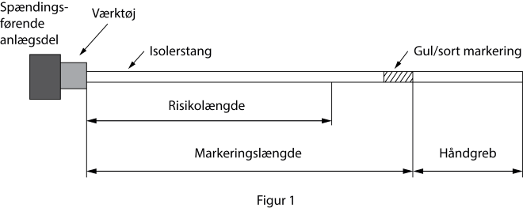

Bekendtgørelse om drift af elektriske anlæg
Bekendtgørelse nr.1608 af 20/12/2017 om sikkerhed for drift af elektriske anlæg - gældende.
I medfør af § 5, stk. 1, nr. 1, og stk. 2, § 7, stk. 3, § 29, stk. 1 og 2, § 31, stk. 1 og 2, § 34, stk. 2, og § 39 i lov nr. 525 af 29. april 2015 om sikkerhed ved elektriske anlæg, elektriske installationer og elektrisk materiel (elsikkerhedsloven) fastsættes efter bemyndigelse i henhold til § 5, nr. 1 og 2, i bekendtgørelse nr. 545 af 29. maj 2017 om henlæggelse af beføjelser til Sikkerhedsstyrelsen:
Anvendelsesområde
§ 1. Denne bekendtgørelse finder anvendelse på drift af elektriske anlæg og primære højspændingsinstallationer.
Stk. 2. Bekendtgørelsen finder ikke anvendelse på drift og servicering af elproducerende anlæg og lagre til elektrisk energi med nominelle spændinger til og med 1000 V a.c. eller 1500 V d.c., som er udført efter bestemmelserne i bekendtgørelse om sikkerhed for udførelse og drift af elektriske installationer.
.
Definitioner
§ 2. I denne bekendtgørelse forstås ved:
1) Advarselsmarkering: Skilte eller flag, der skal gøre opmærksom på spændingsførende dele.
2) Arbejde: Alle typer af ændringer, ombygninger og modernisering.
3) Arbejde i nærheden af spændingsførende dele: Udførelse af en arbejdsprocedure, hvor en person kommer ind i nærvedzonen med dele af kroppen, med værktøj, udstyr eller anordninger uden at komme ind i farezonen.
4) Arbejde på anlæg under spænding: Udførelse af en arbejdsprocedure, hvor en person bevidst berører spændingsførende dele eller kommer ind i farezonen med dele af kroppen, med værktøj, udstyr eller anordninger.
5) Arbejdshold: To eller flere personer, herunder holdlederen, som i fællesskab udfører en arbejdsprocedure på et arbejdssted.
6) Arbejdsjording: Jording og kortslutning ved arbejdsstedet eller jording og kortslutning ved overgange mellem kabelanlæg og luftledningsanlæg i tilfælde, hvor der skal arbejdes på kabelanlægget.
7) Arbejdsleder: Sagkyndig person, der er skriftligt udpeget til at tilrettelægge, lede og føre tilsyn med overholdelse af arbejdsproceduren.
8) Arbejdsprocedure: Samlet betegnelse for spændingsløst arbejde, arbejde under spænding og arbejde i nærheden af spændingsførende dele. Inkluderer tillige vedligeholdelsprocedurer.
9) Barriere: Beskyttelsesanordning, der yder beskyttelse mod direkte berøring fra enhver normal adgangsretning. Kan være en fastmonteret del af det elektriske anlæg.
10) Beskyttelsesanordninger: Samlet betegnelse for skærme, barrierer, isolerende afdækning og kapslinger.
11) Driftsaktivitet: Aktivitet, der har til formål at ændre det elektriske anlægs elektriske tilstand.
12) Driftsansvarlig person: Ansat i en driftsansvarlig virksomhed og godkendt af Sikkerhedsstyrelsen til at sikre de nødvendige faglige kompetencer ved drift af elektriske anlæg.
13) Driftsansvarlig virksomhed: Virksomhed, der varetager driften af et elektrisk anlæg.
14) Driftsprocedure: Samlet betegnelse for driftsaktiviteter og funktionskontrol. En driftsprocedure kan være en del af en arbejdsprocedure.
15) Endepunktsjording: Jording og kortslutning ved en adskiller, en lastadskiller eller et skillested mellem et spændingsførende og et spændingsløst anlæg.
16) Farezonen: Zonen for arbejde under spænding DL. Område omkring spændingsførende dele, hvor isolationsniveauet til beskyttelse mod elektrisk fare er utilstrækkeligt, når personer rækker ind i eller går ind i området, jf. bilag 2.
17) Funktionskontrol: Aktivitet, der har til formål at kontrollere anlæggets tilstand og sikre, at det fungerer i overensstemmelse med de tekniske krav.
18) Holdleder: Sagkyndig person, der er skriftligt udpeget til at lede og føre tilsyn med arbejde på et arbejdssted.
19) Instrueret person: Person, der er instrueret af en sagkyndig person, så den pågældende kan undgå de farer, som elektricitet kan skabe.
20) Instruks: Skriftlig meddelelse fra den driftsansvarlige person, som præciserer, hvordan og af hvem et givent arbejde udføres eller hvem, der skal varetage en bestemt funktion.
21) Instruktion: Mundtlig eller skriftlig beskrivelse af, hvordan og hvilken funktion en given drifts- eller arbejdsprocedure skal udføres eller af sikkerhedsmæssig korrekt adfærd.
22) Isolerende afdækning: Midlertidig beskyttelsesanordning, typisk i form af dug eller plade af isolerende materiale, der skal forhindre, at personer under udførelse af arbejde i nærheden af uisolerede spændingsførende dele eller spændingsløse dele utilsigtet kommer ind i farezonen omkring disse dele.
23) Jording: Forbindelse mellem jord og en eller flere ledere i systemet.
24) Jordingssted: Sted, hvor jording og kortslutning foretages.
25) Koblingsleder: Sagkyndig person, der er skriftligt udpeget til at styre højspændingsanlægs koblings- og driftstilstand og herunder at lede koblinger i forbindelse med arbejde på eller i nærheden af højspændingsanlæg.
26) Koblingsperson: Sagkyndig person, der er skriftligt udpeget til at udføre koblinger i højspændingsanlæg efter ordre fra koblingslederen.
27) Kvalitetsledelsessystem for drift (KLS-D): System, der indeholder de procedurer og den dokumentation, som skal sikre, at det elektriske anlæg drives, så det ikke frembyder fare for personer, husdyr eller ejendom.
28) Nærvedzonen: Område uden for farezonen DV, jf. bilag 2.
29) Primær højspændingsinstallation: Installation, der forsynes direkte fra et højspændingsanlæg.
30) Procedurer: Samlet begreb for driftsprocedurer og arbejdsprocedurer.
31) Sagkyndig person: Person med relevant uddannelse, viden og erfaring, som sætter den pågældende i stand til at analysere risici og til at undgå de farer, som elektricitet kan skabe.
32) Sikkerhedsafstand: Afstand i luft, som fastsættes for arbejde på eller i nærheden af et højspændingsanlæg under spænding for at sikre, at de, der udfører opgaven, ikke utilsigtet kommer ind i farezonen omkring de uisolerede spændingsførende dele.
33) Sikkerhedsperson: Sagkyndig person på et arbejdshold, som er udpeget af holdlederen til at føre særligt tilsyn med, at sikkerhedsafstanden overholdes.
34) Skærm: Midlertidig beskyttelsesanordning, isolerende eller ikke-isolerende, der anvendes til at forhindre adgang til ethvert udstyr eller dele af et elektrisk anlæg, hvor der kan være elektrisk fare.
35) Stationsområde: Fællesbetegnelse for områder der indeholder elektriske anlæg.
§ 3. Ved drift af elektriske anlæg kan standarden EN 50110-1: Drift af elektriske installationer og elektriske anlæg anvendes sammen med denne bekendtgørelse, hvorved sikkerhedskravet i elsikkerhedslovens § 3 anses for opfyldt.
Stk. 2. Anvendes standarden EN 50110 ikke eller kun delvist, skal ejeren af det elektriske anlæg dokumentere, at den valgte løsning har et sikkerhedsniveau, som mindst er tilsvarende sikkerhedsniveauet i standarden EN 50110, hvorved sikkerhedskravet i elsikkerhedslovens § 3 anses for opfyldt.
Stk. 3. Dokumentation, jf. stk. 2, skal opbevares i kvalitetsledelsessystemet for drift, jf. bilag 1, punkt VI, nr. 3.
Offentliggørelse
§ 4. Standarden EN 50110, som denne bekendtgørelse henviser til, indføres ikke i Lovtidende, men kan købes ved Dansk Standard eller gennemses ved Sikkerhedsstyrelsen.
Meddelelse om varetagelse af driften
§ 5. Ejeren af det elektriske anlæg skal lade driften af anlægget varetage af en driftsansvarlig virksomhed, der har ansat en driftsansvarlig person, som er godkendt af Sikkerhedsstyrelsen, jf. § 13.
Stk. 2. Den driftsansvarlige virksomhed, jf. stk. 1, skal være
1) ejeren af det elektriske anlæg, hvis denne er en virksomhed, eller
2) en virksomhed, som ejeren af det elektriske anlæg har indgået aftale med.
Stk. 3. Den driftsansvarlige person ansat i en driftsansvarlig virksomhed, der kun varetager driften af en primær højspændingsinstallation, skal ikke godkendes af Sikkerhedsstyrelsen.
§ 6. Den driftsansvarlige virksomhed for det elektriske anlæg skal via en blanket på erhvervsportalen Virk.dk (www.virk.dk) eller Kvikskranken (www.businessindenmark.dk) meddele Sikkerhedsstyrelsen, at virksomheden er driftsansvarlig virksomhed for det elektriske anlæg, jf. § 5.
Stk. 2. Det skal fremgå af meddelelsen, jf. stk. 1, hvem virksomheden har ansat som driftsansvarlig person.
§ 7. Når Sikkerhedsstyrelsen har modtaget en meddelelse, jf. § 6, sender Sikkerhedsstyrelsen en kvittering til ejeren af det elektriske anlæg om, hvilken virksomhed der er registreret som driftsansvarlig virksomhed for anlægget.
Stk. 2. Når Sikkerhedsstyrelsen har modtaget en meddelelse, jf. § 6, sender Sikkerhedsstyrelsen en kvittering til den driftsansvarlige virksomhed for det elektriske anlæg om, hvilken driftsansvarlig person der er registreret i virksomheden.
Oplysningspligt ved ændringer
§ 8. Ejeren af det elektriske anlæg skal oplyse Sikkerhedsstyrelsen om følgende:
1) Skift af driftsansvarlig virksomhed for det elektriske anlæg.
2) Ændringer i ejerforhold af det elektriske anlæg.
Stk. 2. Forpligtelsen efter stk. 1, nr. 2, påhviler både den tidligere ejer og nuværende ejer af det elektriske anlæg.
§ 9. Den driftsansvarlige virksomhed for det elektriske anlæg skal oplyse Sikkerhedsstyrelsen om ændringer i forbindelse med den driftsansvarlige persons ansættelse.
Dispensation
§ 10. Efter ansøgning fra den driftsansvarlige virksomhed for det elektriske anlæg kan Sikkerhedsstyrelsen meddele dispensation fra kravet om at have en driftsansvarlig person ansat, jf. § 5.
Stk. 2. Ansøgning om dispensation skal indgives til Sikkerhedsstyrelsen via en blanket på erhvervsportalen Virk.dk (www.virk.dk) eller Kvikskranken (www.businessindenmark.dk).
Stk. 3. Ved ansøgning om dispensation, jf. stk. 1, skal den driftsansvarlige virksomhed for det elektriske anlæg erklære, at virksomheden vil sikre, at den driftsansvarlige persons opgaver varetages i dispensationsperioden, jf. bilag 1, pkt. II, nr. 1.
Stk. 4. Dispensation, jf. stk. 1, kan gives i en periode af op til 3 måneder ud fra en samlet vurdering af sagens omstændigheder.
Stk. 5. Sikkerhedsstyrelsen kan fastsætte vilkår for dispensationen, jf. stk. 1.
Kvalifikationer
§ 11. Godkendelse som driftsansvarlig person kan gives til følgende personer:
1) Personer, der har bestået en afsluttende eksamen som elingeniør med relevant speciale inden for elektriske anlæg.
2) Personer, som kan opnå godkendelse som fagligt ansvarlig i en autoriseret elinstallatørvirksomhed i henhold til bekendtgørelse om godkendelse af fagligt ansvarlige på el-, vvs- og kloakinstallationsområdet og på gasområdet m.v., og som kan dokumentere relevant praktisk erfaring med drift af elektriske anlæg.
3) Personer, som har bestået afsluttende eksamen som ingeniør med dokumenteret relevant teoretisk viden og praktisk erfaring med drift af elektriske anlæg.
4) Personer, som er godkendt som driftsleder efter stærkstrømsbekendtgørelsens afsnit 5.
Stk. 2. Sikkerhedsstyrelsen kan i særlige tilfælde dispensere fra kravene i stk. 1, når det skønnes at være elsikkerhedsmæssigt forsvarligt.
Ansøgning om godkendelse
§ 12. Ansøgning om at blive godkendt som driftsansvarlig person for elektriske anlæg skal indgives til Sikkerhedsstyrelsen via en blanket på erhvervsportalen Virk.dk (www.virk.dk) eller Kvikskranken (www.businessindenmark.dk).
Stk. 2. Ansøgningen, jf. stk. 1, skal indeholde følgende oplysninger:
1) Ansøgerens fulde navn og cpr-nummer.
2) Oplysning om ansøgerens adresse og e-mailadresse.
3) Oplysning om og dokumentation for ansøgerens kvalifikationer, jf. § 11.
4) Oplysning om, hvorvidt ansøgeren er godkendt som driftsleder efter stærkstrømsbekendtgørelsens afsnit 5.
§ 13. Godkendelse som driftsansvarlig person meddeles af Sikkerhedsstyrelsen, når det er dokumenteret, at
1) ansøgeren har de rette kvalifikationer til at kunne udøve hvervet som driftsansvarlig person, jf. § 11, og
2) ansøgeren er myndig og ikke er under værgemål efter værgemålslovens § 5 eller under samværgemål efter værgemålslovens § 7.
Stk. 2. Ansøgeren skal afgive en skriftlig erklæring om, hvorvidt vedkommende inden for de sidste 3 år er straffet for overtrædelse af elsikkerhedsloven, den tidligere gældende lov om elektriske stærkstrømsanlæg og elektrisk materiel eller regler udstedt i medfør af disse love.
§ 14. Ved modtagelse af en ansøgning sender Sikkerhedsstyrelsen en kvittering til ansøgeren med oplysning om følgende:
1) Fristen for meddelelse af afgørelse om godkendelse, jf. § 15.
2) At ansøgeren kan betragte godkendelsen for meddelt, hvis ikke Sikkerhedsstyrelsen har truffet afgørelse inden fristens udløb, jf. § 15, stk. 3.
3) Klagemuligheder.
§ 15. Sikkerhedsstyrelsen skal træffe afgørelse om godkendelse af den driftsansvarlige person senest 60 dage efter modtagelsen af anmeldelsen og alle nødvendige dokumenter, jf. dog stk. 2.
Stk. 2. Fristen i stk. 1 kan forlænges én gang, hvis sagens kompleksitet berettiger det. Sikkerhedsstyrelsen skal, inden udløbet af fristen i stk. 1, begrunde forlængelsen overfor ansøgeren og oplyse en ny frist for, hvornår afgørelsen vil blive truffet.
Stk. 3. Hvis Sikkerhedsstyrelsen ikke har truffet afgørelse inden udløbet af fristerne efter stk. 1 og 2, kan godkendelsen anses for meddelt.
Afslag
§ 16. Uanset at betingelserne i § 13 for at opnå godkendelse som driftsansvarlig person er opfyldt, kan Sikkerhedsstyrelsen meddele afslag i følgende tilfælde:
1) Under de omstændigheder, der er nævnt i straffelovens § 78, stk. 2.
2) Ansøgeren er i udlandet ikendt sanktioner for forhold, der kan sidestilles med de i straffelovens § 78, stk. 2, nævnte.
3) Ansøgeren har i stilling eller hverv i øvrigt udvist en sådan adfærd, at der er grund til at antage, at driften ikke vil blive varetaget på forsvarlig måde.
Stk. 2. Ved afslag efter stk. 1, nr. 1-2, finder straffelovens § 78, stk. 3, tilsvarende anvendelse.
Bortfald
§ 17. En godkendelse som driftsansvarlig person bortfalder, når personen ikke længere opfylder betingelsen i § 13, stk. 1, nr. 2.
§ 18. Ejeren af det elektriske anlæg skal
1) sikre, at der til enhver tid er en godkendt driftsansvarlig person i den driftsansvarlige virksomhed, og
2) sikre at den driftsansvarlige virksomhed har de beføjelser, som er nødvendige for, at den driftsansvarlige virksomhed kan varetage sine opgaver.
Stk. 2. Dokumentation for opfyldelse af stk. 1, nr. 2, skal fremgå af kvalitetsledelsessystemet for drift, jf. bilag 1, punkt I, nr. 2.
§ 19. Ejeren af det elektriske anlæg skal sikre, at henvendelser efter bekendtgørelse om sikkerhed for udførelse af ikke-elektrisk arbejde i nærheden af elektriske anlæg håndteres af den driftsansvarlige virksomhed.
Stk. 2. Ved henvendelse efter stk. 1 skal den driftsansvarlige virksomhed oplyse, hvilke elektriske anlæg der findes i arbejdsområdet.
Generelt
§ 20. For at varetage driften af et elektrisk anlæg skal den driftsansvarlige virksomhed have ansat en driftsansvarlig person, som er godkendt af Sikkerhedsstyrelsen, jf. § 13.
§ 21. Den driftsansvarlige virksomhed skal udarbejde en procedure for, hvordan det sikres, at den driftsansvarlige persons opgaver varetages ved den driftsansvarlige persons fravær.
Stk. 2. Proceduren, jf. stk. 1, skal opbevares i kvalitetsledelsessystemet for drift, jf. bilag 1, punkt II, nr. 1.
§ 22. Den driftsansvarlige virksomhed for det elektriske anlæg skal sikre, at den driftsansvarlige person har de beføjelser, som er nødvendige for, at den driftsansvarlige person kan varetage sine opgaver.
§ 23. Den driftsansvarlige person skal i samarbejde med den driftsansvarlige virksomhed sikre de nødvendige faglige kompetencer i relation til den driftsansvarlige virksomheds ansvarsområder ved drift af elektriske anlæg. Herunder skal den driftsansvarlige person udpege personer til funktionerne koblingsleder, koblingsperson, arbejdsleder og holdleder samt indgå aftaler med entreprenører, indgå sammenkoblingsaftaler og give tilladelse til autoriserede elinstallatørvirksomheder.
Stk. 2. Følgende opgaver kan kun varetages af den driftsansvarlige person:
1) Indgå aftaler med entreprenør om udførelse af drifts- og arbejdsprocedurer som en del af driften, jf. § 44.
2) Indgå sammenkoblingsaftaler, jf. § 30.
3) Give tilladelse til autoriserede elinstallatørvirksomheder, jf. § 46.
§ 24. Den driftsansvarlige virksomhed skal anvende det kvalitetsledelsessystem for drift, som ejeren af det elektriske anlæg stiller til rådighed.
Stk. 2. Den driftsansvarlige virksomhed for det elektriske anlæg skal sikre, at kvalitetsledelsessystemet for drift er tilgængeligt for og anvendes af medarbejdere i den driftsansvarlige virksomhed.
§ 25. Den driftsansvarlige virksomhed skal sikre, at de medarbejdere, som deltager i driften af det elektriske anlæg, har adgang til relevante regelsæt fra Sikkerhedsstyrelsen og relevante standarder.
Den driftsansvarlige virksomhed og dennes medarbejdere
§ 26. Den driftsansvarlige virksomhed for det elektriske anlæg skal sikre, at drifts- og arbejdsprocedurer i forbindelse med driften af anlæg bemandes korrekt, at medarbejderne instrueres tilstrækkeligt, og at der føres tilstrækkeligt tilsyn med arbejdets udførelse.
Stk. 2. Den driftsansvarlige virksomhed skal sikre, at drifts- og arbejdsprocedurer udføres i overensstemmelse med det kvalitetsledelsessystem, som ejeren af det elektriske anlæg stiller til rådighed.
§ 27. Den driftsansvarlige virksomhed for det elektriske anlæg skal sikre, at medarbejderne har de fornødne kompetencer til de typer af procedurer, som den driftsansvarlige virksomhed udfører, og at medarbejdernes kompetencer vedligeholdes.
Stk. 2. Den driftsansvarlige virksomhed skal sikre, at medarbejdere, som udfører drifts- og arbejdsprocedurer på eller i nærheden af anlæg under spænding, i nødvendigt omfang instrueres i bestemmelserne herom.
§ 28. Den driftsansvarlige virksomhed for det elektriske anlæg skal sikre, at personale, der udfører arbejde på eller i nærheden af det elektriske anlæg, i nødvendigt omfang har gennemgået og repeteret et kursus i førstehjælp. Personalet skal endvidere være instrueret i, hvordan de skal hjælpe en person, der har været udsat for en ulykke af elektrisk karakter, uden at udsætte sig selv for fare.
§ 29. Den driftsansvarlige virksomhed for det elektriske anlæg skal sikre, at personer til funktionerne koblingsleder, koblingsperson, arbejdsleder og holdleder udpeges i det omfang, det er nødvendigt for driften af det elektriske anlæg.
Stk. 2. Udpegning, jf. stk. 1, skal ske skriftligt med angivelse af den funktion, som den pågældende skal udføre.
Drift af det elektriske anlæg
§ 30. Forud for sammenkobling af elektriske anlæg, hvor driften ikke varetages af den samme driftsansvarlige virksomhed, skal de driftsansvarlige virksomheder indgå skriftlig aftale herom. Aftalen skal indeholde en beskrivelse af samarbejdet i anlæggenes grænseområde, og hvordan koblinger mellem anlæggene skal aftales.
Stk. 2. De driftsansvarlige personer for de elektriske anlæg skal underskrive aftalen efter stk. 1 på vegne af de driftsansvarlige virksomheder.
§ 31. Den driftsansvarlige virksomhed for et højspændingsanlæg skal sikre, at anlæggets koblingstilstand og driftstilstand overvåges og kontrolleres af en koblingsleder.
§ 32. Den driftsansvarlige virksomhed for det elektriske anlæg skal sikre, at der findes et ledningsskema over stationsanlægget i stationsrum for betjening af følgende anlæg:
1) Anlæg med driftsspændinger for 30 kV og derover.
2) Anlæg med komplekse koblingsanlæg.
3) Anlæg med mere end to transformere.
§ 33. Den driftsansvarlige virksomhed for det elektriske anlæg skal sikre, at der udarbejdes
1) en ajourført dokumentation for det elektriske anlæg ved eventuelle ændringer,
2) et ajourført koblingsskema, der viser højspændingsnettets koblingstilstand, og
3) en rapport med oversigt over driftsforstyrrelser, deres art og tidspunkterne for deres indtræden og afhjælpning.
Stk. 2. Rapporten, jf. stk. 1, nr. 3, skal opbevares i mindst ét år.
§ 34. Den driftsansvarlige virksomhed for det elektriske anlæg skal sikre, at det korrekte værktøj, udstyr og anordninger er til rådighed til udførelse af procedurer i forbindelse med driften af det elektriske anlæg.
§ 35. Den driftsansvarlige virksomhed skal sikre, at vedligeholdelse af materiel, der udgør hele eller dele af det elektriske anlæg, udføres i overensstemmelse med en fastlagt vedligeholdelsesplan eller efter fabrikantens anvisninger.
§ 36. Den driftsansvarlige virksomhed for det elektriske anlæg skal sikre, at stationsområder ikke anvendes til formål, som er driften af anlægget uvedkommende.
Stk. 2. Ejeren af det elektriske anlæg kan give tilladelse til at anvende stationsområder til andre formål, hvis
1) det sker på baggrund af den driftsansvarlige persons risikovurdering, og
2) personsikkerheden og sikkerheden ved anlægget ikke forringes.
Stk. 3. Den driftsansvarlige virksomhed for det elektriske anlæg skal sikre, at anbringelse af værktøj, anordninger og materiel i stationsområder kun sker
1) i overensstemmelse med § 37, og
2) således at betjeningen af stationsanlægget ikke hindres eller vanskeliggøres.
§ 37. Den driftsansvarlige virksomhed for det elektriske anlæg skal sikre, at adgangsveje til og flugtveje fra stationsanlæg holdes fri og lette at passere.
§ 38. Den driftsansvarlige virksomhed for det elektriske anlæg skal straks indberette alle ulykker af elektrisk karakter, som har forbindelse med anlægget, til Sikkerhedsstyrelsen og samtidig underrette ejeren af det elektriske anlæg.
Stk. 2. Indberetningen, jf. stk. 1, skal indeholde alle oplysninger, der kan være af betydning for at vurdere årsagen til ulykken.
§ 39. Den driftsansvarlige virksomhed skal gøre ejeren af det elektriske anlæg bekendt med væsentlige sikkerhedsmæssige fejl og mangler, der kan udgøre en fare for personer, husdyr eller ejendom.
§ 40. Den driftsansvarlige virksomhed for det elektriske anlæg skal sikre, at enhver, der færdes på eller nær ved det elektriske anlæg, instrueres om sikkerhedsmæssig korrekt adfærd og om at overholde bestemmelserne i § 43.
Stk. 2. Anvender den driftsansvarlige virksomhed for det elektriske anlæg ekstern arbejdskraft til udførelse af procedurer på eller i nærheden af det elektriske anlæg, har den driftsansvarlige virksomhed samme ansvar for disse personers sikkerhed under udførelsen som for virksomhedens egne medarbejdere.
Stk. 3. Stk. 1 omfatter ikke entreprenører efter § 44 og autoriserede elinstallatørvirksomheder efter § 46.
§ 41. Den driftsansvarlige virksomhed for det elektriske anlæg skal sikre, at stationsområder og betjeningsanordninger holdes aflåst, hvis der er risiko for, at uvedkommende kan få adgang.
§ 42. Den driftsansvarlige virksomhed for det elektriske anlæg skal sikre, at der kun gives adgangstilladelse til aflåste stationsområder og aflåste betjeningsanordninger til personer, der har tilstrækkelig viden om de risici, der er forbundet hermed.
Stk. 2. Nøgler skal udleveres mod kvittering fra modtager og må ikke videregives til andre uden særlig aftale med den driftsansvarlige person.
§ 43. Ved færden i stationsområder må beskyttelsesanordninger, der er anbragt som beskyttelse mod uagtsom berøring af spændingsførende dele i henhold til bekendtgørelse om sikkerhed for udførelse af elektriske anlæg, ikke overskrides eller fjernes. Bærende konstruktioner for det elektriske anlæg må ikke bestiges.
Stk. 2. Under udførelse af procedurer efter bestemmelserne i kapitel 13-19 kan stk. 1 fraviges i det omfang, det er nødvendigt for at kunne udføre disse procedurer.
§ 44. Den driftsansvarlige virksomhed for det elektriske anlæg kan indgå skriftlig aftale med entreprenører om udførelse af procedurer som en del af driften af det elektriske anlæg.
Stk. 2. Den driftsansvarlige virksomhed for det elektriske anlæg skal ved aftaler, jf. stk. 1, sikre, at entreprenøren har en godkendt driftsansvarlig person ansat, jf. § 13.
Stk. 3. Aftalen med entreprenøren, jf. stk. 1, skal indeholde en beskrivelse af følgende:
1) Hvilket elektrisk anlæg aftalen omfatter.
2) Hvilke procedurer entreprenøren skal udføre.
3) Hvilke funktioner entreprenøren selv kan udpege personer til, og hvem der har ansvar for udpegningen.
§ 45. En entreprenør, som har indgået aftale, jf. § 44, skal sikre, at
1) arbejde på eller i nærheden af det elektriske anlæg sker uden fare for personer, husdyr eller ejendom,
2) drifts- og arbejdsprocedurer på det elektriske anlæg planlægges, jf. § 47,
3) entreprenørens medarbejdere og underleverandørernes medarbejdere får tilstrækkelig instruktion,
4) procedurerne udføres i overensstemmelse med bestemmelserne i denne bekendtgørelse, og
5) det kvalitetsledelsessystem, som ejeren af det elektriske anlæg stiller til rådighed, følges.
Stk. 2. En entreprenør, som har indgået aftale, jf. § 44, kan udbyde procedurer omfattet af aftalen i underentreprise. Ansvaret, for udførelse af procedurer som en del af driften af det elektriske anlæg, bliver hos entreprenøren.
§ 46. Den driftsansvarlige virksomhed for det elektriske anlæg kan give autoriserede elinstallatørvirksomheder tilladelse til at udføre følgende procedurer:
1) Procedurer, der udføres i forsyningspunktet, hvor den elektriske lavspændingsinstallation tilsluttes det elektriske anlæg.
2) Isætning og udskiftning af stikledningssikringer.
Stk. 2. Når en autoriseret elinstallatørvirksomhed udfører procedurer efter stk. 1, er der ikke krav om, at der er en driftsansvarlig person ansat i den autoriserede elinstallatørvirksomhed.
Stk. 3. Under udførelse af procedurer efter stk. 1 har den autoriserede elinstallatørvirksomhed ansvar for dennes egne medarbejdere.
Risikovurdering og planlægning af drifts- og arbejdsprocedurer
§ 47. Inden enhver drifts- og arbejdsprocedure påbegyndes, skal en sagkyndig person planlægge udførelsen af proceduren og foretage en vurdering af de elektriske risici, som er forbundet med udførelsen.
Stk. 2. I forbindelse med planlægningen og på baggrund af risikovurderingen, jf. stk. 1, skal der tages stilling til følgende:
1) Procedurens omfang og arbejdsstedets afgrænsning.
2) Valg af arbejdsmetode.
3) Valg af værktøj og andet udstyr.
4) Valg af beskyttelsesanordninger og personlige værnemidler.
5) Valg af og instruktion af de personer, der skal udføre drifts- eller arbejdsproceduren.
6) Vurdering af undsætningsmuligheder ved uheld.
Stk. 3. Planlægning og risikovurdering af arbejdsprocedurer skal foretages af en arbejdsleder.
Kommunikation
§ 48. Enhver melding mellem koblingsleder, koblingsperson, arbejdsleder og holdleder skal indeholde navnet på den person, der afgiver meldingen.
Stk. 2. Sker meldingen mundtligt, skal den gentages af modtageren, og afsenderen skal bekræfte, at meldingen er korrekt forstået.
§ 49. Påbegyndelse af arbejde eller indkobling efter endt arbejde må ikke ske på baggrund af på forhånd aftalte tidspunkter.
Arbejdssted
§ 50. Et arbejdssted skal være veldefineret og klart markeret. Der skal være tilstrækkelig plads, adgangsmuligheder og belysning alle steder, hvor der skal udføres drifts- og arbejdsprocedurer. Når det er nødvendigt, skal adgangen til arbejdsstedet markeres klart.
§ 51. Brændbare materialer og genstande, der kan forhindre passage, må ikke placeres nær ved eller i adgangs- og flugtveje til og fra koblingsanlæg og på betjeningssteder for koblingsanlæg. Brændbare materialer skal holdes væk fra kilder til lysbuer.
§ 52. Ved luftledningsanlæg skal der ud fra en vurdering af det elektriske anlægs mekaniske tilstand og drifts- og arbejdsprocedurens type og omfang træffes fornødne foranstaltninger mod risikoen for ulykker, som kan opstå som følge af de mekaniske påvirkninger, som det elektriske anlæg kan blive udsat for under udførelse af proceduren.
Værktøj, udstyr og anordninger
§ 53. Værktøj, udstyr og anordninger, som anvendes i forbindelse med driften af det elektriske anlæg, skal
1) være egnet til det formål, det anvendes til, så proceduren kan udføres uden at frembyde fare for personer,
2) anvendes korrekt og i overensstemmelse med fabrikantens eller leverandørens anvisninger,
3) efterses med passende mellemrum eller efter fabrikantens anvisninger, og
4) vedligeholdes, så det er egnet til fortsat brug.
Stk. 2. For ethvert værktøj, hvori der indgår en isolerstang, skal der være fastsat en risikolængde og markeringslængde. Markeringslængden skal angives med gul/sort markering på isolerstangen, jf. bilag 3, figur 1.
§ 54. Vejledninger i brug af værktøj, udstyr og anordninger, som har sikkerhedsmæssig betydning, skal være på dansk, medmindre andet er nødvendigt af hensyn til medarbejdernes sprogkundskaber.
§ 55. Inden enhver drifts- og arbejdsprocedure påbegyndes, skal det sikres, at værktøj, udstyr og anordninger er til rådighed i tilstrækkeligt omfang og uden synlige fejl.
§ 56. Procedurer på eller i nærheden af elektriske anlæg under spænding skal udføres af personer, der er fyldt 18 år.
§ 57. Procedurer på eller i nærheden af elektriske anlæg skal, medmindre andet er anført, udføres af sagkyndige personer eller af instruerede personer under ledelse eller tilsyn af sagkyndige personer.
§ 58. Inden påbegyndelse af enhver arbejdsprocedure, skal der gives instruktion til de personer, der skal udføre arbejdet.
Stk. 2. Inden instruktionen skal det vurderes, om arbejdets kompleksitet kræver, at der suppleres med skriftlig instruktion.
§ 59. For at sikre at arbejdsprocedurer på højspændingsanlæg udføres sikkerhedsmæssigt korrekt, skal arbejdslederen
1) sikre, at de personer, der skal udføre arbejdet, får tilstrækkelig instruktion inden arbejdsproceduren påbegyndes, og
2) føre det nødvendige tilsyn på arbejdsstedet under udførelse af arbejdet.
§ 60. Opstår der under procedurens udførelse på eller i nærheden af elektriske anlæg en uforudset situation, skal arbejdet indstilles, indtil der foreligger tilladelse fra holdlederen eller den sagkyndige, der leder proceduren på arbejdsstedet, til at fortsætte.
Kobling
§ 61. Ved frakobling med henblik på at gøre anlægsdele spændingsløse skal der anvendes adskillere, lastadskillere eller skillesteder med et isolationsniveau over hele skillestrækningen, der svarer til anlæggets type og beskaffenhed.
§ 62. Kobling af elektriske lavspændingsanlæg skal ledes eller udføres af en sagkyndig person.
§ 63. Kobling af elektriske højspændingsanlæg skal udføres i samarbejde mellem en koblingsleder og en koblingsperson.
§ 64. Transportable stænger til kobling af betjeningsanordninger for højspænding anbragt i eller lige uden for farezonen skal opfylde kravene, jf. § 53.
Stk. 2. Koblingen skal udføres af en koblingsperson under overholdelse af en for personen fastsat sikkerhedsafstand.
Måling
§ 65. Målinger på højspændingsanlæg skal udføres af en sagkyndig person og udføres efter bestemmelserne om arbejdsprocedurer for lav- og højspændingsanlæg under spænding, jf. kapitlerne 13 og 16-18 eller arbejdsprocedurer for arbejde i nærheden af spændingsførende dele, jf. kapitlerne 13, 16, 17 og 19 hvis der er risiko for at komme inden for farezonen eller nærvedzonen.
Eftersyn
§ 66. Ved eftersyn af kapslede anlæg under spænding kan en sagkyndig person åbne døre, låger eller inspektionsdæksler i anlægget, hvis det sker under overholdelse af en fastsat sikkerhedsafstand.
Stk. 2. Eftersyn, der kræver demontering af fastmonterede kapslinger, skal udføres efter bestemmelserne om arbejdsprocedurer for lav- og højspændingsanlæg under spænding, jf. kapitlerne 13 og 16-18.
§ 67. Arbejdsprocedurer skal ledes eller udføres af en holdleder.
Stk. 2. Arbejdsprocedurer for spændingsløse lavspændingsanlæg er ikke omfattet af stk. 1.
§ 68. Arbejdsprocedurer for højspændingsanlæg må kun iværksættes af en arbejdsleder.
Stk. 2. Arbejdsprocedurer for højspændingsanlæg kan iværksættes efter fastlagte instrukser, hvis der er tale om rutineprægede procedurer, der ofte gentages på den samme type anlæg.
§ 69. Arbejdsprocedurer på eller i nærheden af spændingsløse lavspændingsanlæg skal på arbejdsstedet ledes eller udføres af en sagkyndig person.
Stk. 2. Tilladelse til at påbegynde arbejdsproceduren skal gives af en sagkyndig person.
Stk. 3. Klarmelding til spændingssætning efter endt arbejde skal gives af en sagkyndig person.
§ 70. Ved arbejde på spændingsløse anlæg skal følgende sikkerhedsforanstaltninger etableres:
1) Fuldstændig afbrydelse.
2) Sikring mod indkobling.
3) Kontrol af spændingsløs tilstand.
4) Jording og kortslutning, hvor der er risiko for, at anlægget kan blive spændingsførende.
5) Beskyttelse mod eventuelle spændingsførende dele i nærheden.
§ 71. Efter udførelse af arbejde på spændingsløse lavspændingsanlæg skal alle personer, som har været involveret i arbejdet, informeres om, at
1) arbejdet afsluttes,
2) etablerede sikkerhedsforanstaltninger og beskyttelsesanordninger ophæves, og
3) anlægget derefter skal betragtes som spændingsførende.
Generelt
§ 72. Arbejdsprocedurer på eller i nærheden af spændingsløse højspændingsanlæg skal udføres i samarbejde med en koblingsleder.
Stk. 2. Driftsaktiviteter, der ikke udføres af koblingslederen, skal udføres af en koblingsperson efter ordre fra koblingslederen.
Stk. 3. Koblingslederen skal vide, hvem der er holdleder under arbejdsproceduren og hvordan denne kontaktes.
§ 73. Arbejdsprocedurer på eller i nærheden af spændingsløse højspændingsanlæg skal på arbejdsstedet ledes eller udføres af en holdleder.
Stk. 2. Holdlederen skal vide, hvem der er koblingsleder under proceduren og hvordan denne kontaktes.
Koblingslederen
§ 74. Koblingslederen skal, inden arbejdsproceduren påbegyndes, sikre, at sikkerhedsforanstaltninger er etableret, jf. § 75. Indtil sikkerhedsforanstaltninger er etableret, betragtes det elektriske anlæg som spændingsførende.
§ 75. Ved arbejde på spændingsløse højspændingsanlæg skal følgende sikkerhedsforanstaltninger etableres:
1) Fuldstændig afbrydelse.
2) Kontrol af afbrydelse.
3) Sikring mod indkobling.
4) Kontrol af spændingsløs tilstand før endepunktsjording.
5) Etablering af endepunktsjording.
6) Kontrol af gennemført endepunktsjording.
7) Koblingsskema opdateres.
8) Klarmelding til holdlederen.
§ 76. Koblingslederen skal under arbejdsprocedurens udførelse sikre, at
1) de til frakoblingen anvendte koblingsapparater er sikret mod utilsigtet indkobling,
2) markering af forbud mod indkobling ikke fjernes, før arbejdet er afsluttet, og
3) eventuelle endepunktsjordinger, som er etableret, opretholdes under hele arbejdet.
Stk. 2. Ved måling eller afprøvning kan stk. 1 nr. 3 fraviges.
Stk. 3. Ved til- og frakobling af måle- og afprøvningsudstyr kan stk. 1 nr. 3 fraviges, når den pågældende anlægsdel har været jordforbundet og kortsluttet umiddelbart inden tilkoblingen af udstyret.
Holdlederen
§ 77. Holdlederen skal, inden arbejdet påbegyndes, sikre, at der etableres sikkerhedsforanstaltninger, jf. § 78.
Stk. 2. Arbejdet må ikke påbegyndes, før der foreligger klarmelding fra koblingslederen.
§ 78. Holdlederen skal sikre,
1) at kontrol af spændingsløs tilstand foretages før arbejdsjording,
2) at arbejdsjording etableres,
3) kontrol af gennemført arbejdsjording, og
4) at der i fornødent omfang opsættes beskyttelsesanordninger eller advarselsmarkering, jf. §§ 103-109, for at hindre, at spændingsførende anlægsdele fejlagtigt kan blive opfattet som spændingsløse.
§ 79. Holdlederen må ikke lade arbejdet påbegynde, før der på arbejdsstedet er givet fornøden instruktion til alle deltagere på arbejdsholdet om
1) arbejdsprocedurens omfang,
2) arbejdsstedets afgrænsning,
3) spændingsførende anlægsdele nær ved arbejdsstedet,
4) arbejdets udførelse, og
5) etablerede sikkerhedsforanstaltninger og beskyttelsesanordninger.
§ 80. Holdlederen skal, under arbejdets udførelse, sikre, at
1) de etablerede sikkerhedsforanstaltninger og beskyttelsesanordninger opretholdes, så længe arbejdet varer, og
2) arbejdsjordinger, der er etableret i henhold til § 81, opretholdes under hele arbejdet.
Stk. 2. Ved måling eller afprøvning kan stk. 1, nr. 2, fraviges.
Stk. 3. Ved til- og frakobling af måle- og afprøvningsudstyr kan stk. 1, nr. 2, fraviges, når den pågældende anlægsdel har været jordforbundet og kortsluttet umiddelbart inden tilkoblingen af udstyret.
Jording og kortslutning
§ 81. Arbejdsjording skal udføres i det omfang, det er påkrævet efter §§ 82-89.
Stk. 2. Før arbejdsjording af en anlægsdel, jf. stk. 1, skal det kontrolleres, at anlægsdelen er spændingsløs på jordingsstedet. Kontrollen skal udføres på den eller de ledere, som skal jordforbindes og kortsluttes.
Stk. 3. Fast installerede jordsluttere kan sluttes uden forudgående spændingsprøve ved jordslutteren, hvis dette kan ske uden risiko for personer.
Stk. 4. Holdlederen skal kontrollere, at fornødne arbejdsjordinger er opsat.
§ 82. I luftledningsanlæg, åbne stationsanlæg og kapslede anlæg, der åbnes for at udføre arbejde, kræves arbejdsjording, jf. dog stk. 2, og §§ 83 og 85.
Stk. 2. En endepunktsjording kan betragtes som arbejdsjording, hvis den er placeret så tæt ved arbejdsstedet, at § 88 er opfyldt.
§ 83. Ved arbejdsprocedurer nær ved luftledninger er det tilladt at udelade arbejdsjording, hvis
1) luftledningen er endepunktsjordet, og
2) der holdes en afstand på mindst 1 meter fra ledningen under arbejdet.
§ 84. Ved arbejdsprocedurer på luftledninger for vekselstrøm med driftsspændinger over 60 kV kræves der kun arbejdsjording på den eller de faser, hvorpå der skal arbejdes, forudsat at der
1) er etableret endepunktsjording,
2) etableres advarselsmarkering på de faser, der ikke er jordforbundet ved arbejdsstedet, og
3) ikke opstår risiko for, at de personer, der udfører arbejdet, kommer inden for 1 meter fra de faser, der ikke er jordforbundet ved arbejdsstedet med nogen del af kroppen, værktøj, udstyr eller materiel.
§ 85. Er en arbejdsjording ikke beregnet for anlæggets fulde jordslutnings- og kortslutningsstrøm, kræves der desuden endepunktsjording.
§ 86. Inden udførelse af arbejde i kabelanlæg skal der udføres endepunktsjording.
Stk. 2. Er kabelanlægget tilsluttet luftledningsstrækninger, skal der desuden etableres arbejdsjording ved overgange mellem kabelanlægget og luftledningsstrækningerne.
§ 87. Jordingsstederne skal vælges således, at der ikke indgår sikringer eller afbrydere imellem disse og arbejdsstedet.
Stk. 2. Findes der adskillere mellem jordingsstederne og arbejdsstedet, skal disse aflåses i sluttet stilling.
Stk. 3. Jording kan udføres igennem afbrydere i fabriksfærdige anlæg, der er konstrueret til dette formål, hvis afbryderen er spærret, så hverken elektrisk eller mekanisk udkobling kan ske.
§ 88. En arbejdsjording skal være placeret således, at den er synlig fra arbejdsstedet, jf. dog stk. 2 og 3.
Stk. 2. Arbejdsjording for en maskine eller transformer med tilhørende koblingsanlæg kan være placeret i koblingsanlægget, forudsat at maskinen eller transformeren og koblingsanlægget er mærket så entydigt, at fejltagelse er udelukket.
Stk. 3. I stationsrum kan arbejdsjording være placeret på den anden side af en væg eller etageadskillelse, hvis det ikke er muligt at placere arbejdsjording på arbejdsstedet.
§ 89. Jording og kortslutning skal udføres på begge sider af skillestedet, inden adskillelsen foretages, hvis
1) ledere skal adskilles under arbejdet, eller
2) arbejdet foregår på begge sider af skillestedet.
Stk. 2. Ved kabelarbejde kan jording og kortslutning udføres ved kablets endemuffer.
Indkobling af spændingsløse højspændingsanlæg
§ 90. Etablerede sikkerhedsforanstaltninger og beskyttelsesanordninger må ikke ophæves eller fjernes, før holdlederen har meddelt alle, der har deltaget i arbejdet, at disse vil blive ophævet, og at anlægsdelen, der har været spændingsløs under arbejdet, herefter skal betragtes som spændingsførende.
Stk. 2. Er det ikke muligt for holdlederen at give alle, der har deltaget i arbejdet, en meddelelse efter stk. 1, skal det på anden vis sikres, at der ikke opstår fare for personer.
§ 91. Efter udførelse af arbejde på spændingsløse elektriske anlæg skal alle personer, som har været involveret i arbejdet, informeres om, at
1) arbejdet afsluttes,
2) etablerede sikkerhedsforanstaltninger og beskyttelsesanordninger ophæves, og
3) anlægget derefter skal betragtes som spændingsførende.
§ 92. Holdlederen skal, inden anlægsdelen meldes klar til indkobling, sikre, at
1) etablerede sikkerhedsforanstaltninger og beskyttelsesanordninger fjernes,
2) værktøj, anordninger og uvedkommende materiel er fjernet fra anlægsdelen, og
3) anlæggets barrierer og kapslinger er genetableret.
§ 93. Indkobling må først finde sted, når koblingslederen har
1) modtaget klarmelding fra holdlederen og
2) sikret, at alle de etablerede beskyttelsesanordninger er fjernet.
§ 94. Koblingslederen skal efter arbejdets udførelse sikre, at koblingsskemaet bringes i overensstemmelse med det elektriske anlægs øjeblikkelige koblingstilstand.
Generelt
§ 95. Arbejdsprocedurer for arbejde på eller i nærheden af lavspændingsanlæg under spænding må udelukkende foretages på baggrund af en risikovurdering og af en sagkyndig person med særlig viden og erfaring med arbejde på lavspændingsanlæg under spænding.
§ 96. Arbejdsprocedurer for arbejde på eller i nærheden af lavspændingsanlæg under spænding skal udføres af mindst to sagkyndige personer, jf. dog § 98, stk. 2, hvoraf den ene er holdleder og skal lede arbejdsproceduren.
Stk. 2. Personer under oplæring i arbejde på eller i nærheden af lavspændingsanlæg under spænding, kan udføre arbejde på eller i nærheden af lavspændingsanlæg under spænding under tilsyn af en sagkyndig person.
§ 97. Luftledningsarbejde skal udføres af et arbejdshold bestående af holdlederen og mindst én anden person. Begge skal være til stede på arbejdsstedet under hele arbejdets udførelse.
Stk. 2. Luftledningsarbejde fra kurvevogn kan udføres af én person, når der under hele arbejdets udførelse er en anden person til stede.
Stk. 3. Er personen, der udfører arbejdet, jf. stk. 2, ikke sagkyndig, skal vedkommende være instrueret i de med opgaven forbundne risici og undsætningsmuligheder ved uheld.
§ 98. Arbejde på eller i nærheden af kabler, kabelskabe, tavler og lignende under spænding kan udføres af én person, holdlederen, når der findes en anden person så nær ved arbejdsstedet, at denne hurtigt kan gribe ind, hvis uheld indtræffer.
Stk. 2. Er personen, der er nær ved arbejdsstedet, jf. stk. 1, ikke sagkyndig, skal vedkommende være instrueret i undsætning ved uheld.
Stk. 3. På baggrund af en risikovurdering, kan arbejdet, jf. stk. 1, udføres af én person, holdlederen, hvis der er tale om en ukompliceret arbejdsprocedure, og hvis det ikke udgør nogen forøget risiko for den pågældende.
Holdlederen
§ 99. Holdlederen skal, inden arbejdet påbegyndes, sørge for, at der træffes foranstaltninger for at sikre, at
1) kortslutning eller jordslutning ikke forårsages af værktøj eller materiel, og
2) ingen kommer i direkte berøring med spændingsførende dele.
§ 100. Holdlederen skal, inden arbejdet påbegyndes, instruere arbejdsholdet om
1) arbejdsprocedurens omfang,
2) arbejdsstedets afgrænsning,
3) spændingsførende anlægsdele på eller i nærheden af arbejdsstedet,
4) jordforbundne anlægsdele på eller i nærheden af arbejdsstedet,
5) hvordan arbejdet skal udføres, og
6) beskyttelsesanordninger efter §§ 105-106 og §§ 108-109.
§ 101. Holdlederen skal, under arbejdsprocedurens udførelse, føre tilsyn med og sikre, at
1) instruktionen følges,
2) de etablerede beskyttelsesanordninger opretholdes, og
3) arbejdet afbrydes, hvis der under arbejdet indtræffer omstændigheder, der gør dette påkrævet.
§ 102. Efter udførelse af arbejde på eller i nærheden af lavspændingsanlæg under spænding skal alt værktøj, udstyr og anordninger fjernes, og alle personer, som har været involveret i arbejdet, informeres om, at
1) arbejdet afsluttes, og
2) etablerede sikkerhedsforanstaltninger og beskyttelsesanordninger vil blive ophævet.
§ 103. For at sikre at ingen utilsigtet kommer ind i farezonen skal der foretages følgende sikkerhedsforanstaltninger for arbejde på eller i nærheden af højspændingsanlæg under spænding, jf. dog § 129:
1) Fastsættelse af sikkerhedsafstand.
2) Etablering af skærme, barrierer eller isolerende afdækninger.
3) Opsætning af advarselsmarkering.
Stk. 2. Sikkerhedsforanstaltninger, jf. stk. 1, skal enten fastsættes og anvises af arbejdslederen eller i en instruks.
§ 104. Sikkerhedsafstanden for arbejde på eller i nærheden af et højspændingsanlæg under spænding regnes fra anlæggets uisolerede spændingsførende dele og fastsættes ved, at der afhængig af procedurens art, varighed og kompleksitet gives et passende tillæg til afstanden DL.
Stk. 2. Sikkerhedsafstanden skal fastlægges af arbejdslederen i forbindelse med risikovurderingen, jf. § 47.
§ 105. Skærme og barrierer, der anbringes inden for den fastsatte sikkerhedsafstand fra uisolerede spændingsførende anlægsdele, skal bestå af plader af isolerende materiale med elektriske og mekaniske egenskaber, så de i sig selv giver betryggende sikkerhed ved de spændinger, der kan optræde på anlægsdelen.
Stk. 2. Skærme og barrierer, jf. stk. 1, skal kunne opsættes og nedtages uden at overskride sikkerhedsafstanden med nogen del af kroppen.
§ 106. Advarselsmarkering skal udføres med markeringsanordninger bestående af
1) advarselsskilte med siksakpil i overensstemmelse med bekendtgørelse om sikkerhedsskiltning og anden form for signalgivning, eller
2) gule flag med en tilsvarende mærkning.
Stk. 2. Advarselsmarkering må ikke anbringes nærmere uisolerede spændingsførende anlægsdele end afstanden DV eller den fastsatte sikkerhedsafstand, jf. dog stk. 3.
Stk. 3. Før arbejde på eller nær ved spændingsløse højspændingsanlæg er det tilladt at opsætte advarselsmarkering direkte eller tæt på de dele, der er bibeholdt under spænding, hvis det er nødvendigt for, at markeringen heraf kan være effektiv, forudsat at
1) der anvendes advarselsskilte af isolerende materiale,
2) skiltene opsættes med en dertil beregnet isolerstang, der opfylder bestemmelserne for værktøj og anordninger, jf. §§ 53-55, og
3) sikkerhedsafstanden ikke overskrides med nogen del af kroppen under opsætning og nedtagning af skiltene.
§ 107. Arbejdsstedet skal afmærkes med
1) ophængte gul/sorte bånd eller
2) skærme eller barrierer påført advarselsmarkering.
§ 108. Holdlederen skal udpege en sikkerhedsperson inden opsætning og nedtagning af advarselsmarkering samt etablering og fjernelse af beskyttelsesanordninger påbegyndes. Under arbejdsprocedurens udførelse skal sikkerhedspersonen overvåge den person, der udfører arbejdet, og advare denne, hvis sikkerhedsafstanden er i fare for at blive overskredet, jf. dog stk. 3.
Stk. 2. Sikkerhedspersonen må ikke selv deltage i arbejdets udførelse og må overvåge højst to personer, hvis disse arbejder sammen om at udføre arbejdet og befinder sig i umiddelbar nærhed af hinanden.
Stk. 3. For arbejdsprocedurer for elektriske anlæg, hvor spændingsførende dele afskærmes fuldstændigt ved brug af indbygget eller medleveret tilbehør til anlægget i overensstemmelse med leverandørens brugsanvisning, er der ikke krav om en sikkerhedsperson.
§ 109. Ved opsætning og nedtagning af advarselsmarkering samt etablering og fjernelse af beskyttelsesanordninger i nærheden af spændingsløse højspændingsanlæg finder kapitlerne 13 og 15 anvendelse.
Stk. 2. Ved opsætning og nedtagning af advarselsmarkering samt etablering og fjernelse af beskyttelsesanordninger i nærheden af højspændingsanlæg under spænding finder kapitlerne 13 og 18 anvendelse.
Generelt
§ 110. Arbejdsprocedurer for højspændingsanlæg under spænding må udelukkende foretages på baggrund af en risikovurdering og af sagkyndige personer med særlig viden og erfaring med arbejde på højspændingsanlæg under spænding.
§ 111. Arbejdsprocedurer for højspændingsanlæg under spænding skal udføres i samarbejde med en koblingsleder.
Stk. 2. Koblingslederen skal vide, hvem der er holdleder, og hvordan denne kontaktes.
§ 112. Arbejdsprocedurer for højspændingsanlæg under spænding skal på arbejdsstedet ledes af en holdleder, som skal være til stede under hele arbejdsprocedurens udførelse.
Stk. 2. Holdlederen skal vide, hvem der er koblingsleder, og hvordan denne kontaktes.
§ 113. Arbejdsprocedurer for højspændingsanlæg under spænding skal udføres af mindst to personer, herunder holdlederen. Holdlederen og mindst en anden person skal være til stede under hele arbejdet.
Stk. 2. På baggrund af risikovurderingen kan den driftsansvarlige person via en instruks tillade arbejde udført af en enkelt person, hvis der er tale om en ukompliceret arbejdsprocedure eller driftsprocedure, og hvis det ikke udgør nogen forøget risiko for den pågældende.
Arbejdsmetoder
§ 114. Arbejdsprocedurer for højspændingsanlæg under spænding skal udføres efter isolerstangsmetoden, hvor indføring af værktøj og materiel i farezonen omkring spændingsførende anlægsdele sker ved brug af egnede isolerstænger.
Stk. 2. Øvrige anerkendte arbejdsmetoder, jf. EN 50110, kan anvendes som alternativ til isolerstangsmetoden, jf. stk. 1.
§ 115. Hvor risikovurderingen viser, at det er nødvendigt ved udførelse af en arbejdsprocedure, skal en sikkerhedsperson udpeges.
Stk. 2. Sikkerhedspersonen kan være holdlederen og kan deltage i arbejdet i det omfang, det er foreneligt med at overvåge dem, der udfører arbejdet og advare disse, hvis sikkerhedsafstanden er ved at blive overskredet.
Arbejdsforhold
§ 116. Udførelse af en arbejdsprocedure for højspændingsanlæg under spænding skal ske efter en skriftlig arbejdsinstruktion.
Stk. 2. En arbejdsinstruktion, jf. stk. 1, skal tilpasses arbejdets art og skal udleveres til hver enkelt deltager på arbejdsholdet.
Stk. 3. En arbejdsinstruktion, jf. stk. 1, kan enten udarbejdes for en enkelt arbejdsaktivitet eller gælde generelt for arbejdsaktiviteter af samme karakter.
Koblingslederen
§ 117. Koblingslederen skal, før en klarmelding gives, sikre, at
1) anlægsbeskyttelsen er i drift og er indstillet således, at fejl inden for arbejdsstedet hurtigt udkobles,
2) automatisk genindkoblingsudstyr sættes ud af funktion,
3) betjeningsanordninger ikke indkobles, mens der udføres arbejde, og
4) der ikke findes jordfejl på anlægget, jf. dog § 118, stk. 2.
Stk. 2. For arbejdsprocedurer for højspændingsanlæg med maksimal driftsspænding til og med 24 kV kan stk. 1, nr. 2, fraviges, hvis
1) arbejdet er kortvarigt, eller
2) arbejdet udføres med en forøget sikkerhedsafstand og længere markeringslængde i overensstemmelse med risikovurderingen.
Holdlederen
§ 118. Holdlederen skal, inden arbejdsproceduren påbegyndes, sikre, at
1) arbejdet kan udføres efter arbejdsinstruktionen,
2) arbejdsholdets deltagere har nødvendig oplæring og rutine i det arbejde, som de skal udføre,
3) arbejdsholdets deltagere er nøje instrueret om hvilket værktøj og hvilke anordninger, der skal anvendes,
4) konstaterede fejl og mangler afhjælpes,
5) master og konstruktionsdele mærkes i overensstemmelse med arbejdsinstruktionen med de sikkerhedsafstande, som er fastlagt for arbejdsproceduren, og
6) arbejde ikke påbegyndes med jordfejl på anlægget, jf. dog stk. 2.
Stk. 2. Til- og frakobling må ved eftersøgning af jordfejl på anlæg med maksimal driftsspænding på 24 kV uanset stk. 1, nr. 6, igangsættes.
§ 119. Holdlederen skal, inden arbejdet påbegyndes, give fornøden instruktion til arbejdsholdets deltagere om
1) arbejdsprocedurens omfang,
2) arbejdsstedets afgrænsning og
3) arbejdsinstruktionens indhold.
§ 120. Holdlederen skal, inden arbejdet påbegyndes, kontrollere, at
1) værktøj og anordninger er i overensstemmelse med arbejdsinstruktionen,
2) anlægsdele, som kan forårsage uheld under arbejdet, er fri for synlige fejl,
3) ikke-jordforbundne metaldele, som ikke indgår i anlæggets normalt spændingsførende anlægsdele, og som det under arbejdet er muligt at berøre, er spændingsløse, og
4) der på arbejdsstedet er tilfredsstillende kommunikationsforbindelse med koblingslederen.
§ 121. Arbejdsholdets deltagere må ikke påbegynde arbejdet, før holdlederen har tilladt dette.
§ 122. Holdlederen skal under udførelse af arbejdsproceduren sikre, at
1) arbejdsinstruktionen følges, og
2) afstanden mellem faserne indbyrdes og mellem faser og jord og andre objekter ikke reduceres så meget, at der kan opstå fare.
§ 123. Arbejdsholdets deltagere skal under arbejdets udførelse
1) følge holdlederens instruktioner,
2) overholde de angivne sikkerhedsafstande og
3) indstille arbejdet, hvis der opstår en uventet situation.
Stk. 2. Indstilles arbejdet efter stk. 1, nr. 3, skal arbejdsholdets deltagere underrette holdlederen og afvente tilladelse fra holdlederen til at fortsætte arbejdet.
§ 124. Holdlederen skal, efter arbejdet er udført,
1) påse, at værktøj, udstyr og anordninger er fjernet fra anlægget,
2) undersøge, om værktøj, udstyr og anordninger er påført skader under arbejdet,
3) undersøge, om anlægget er påført skader under arbejdet, og
4) informere alle personer, som har været involveret i arbejdsproceduren om, at arbejdet afsluttes, og at etablerede sikkerhedsforanstaltninger og beskyttelsesanordninger vil blive ophævet.
§ 125. Under arbejdsproceduren skal der hele tiden være mindst to personer, herunder holdlederen, til stede.
§ 126. Arbejde i nærheden af spændingsførende højspændingsdele skal udføres af sagkyndige personer.
Stk. 2. Selve arbejdet kan udføres af instruerede personer under ledelse eller tilsyn af holdlederen på baggrund af risikovurderingen. Det gælder dog ikke kortvarigt servicearbejde i nærheden af højspændingsdele under spænding, jf. §§ 129-132.
§ 127. Efter arbejdets udførelse skal etablerede beskyttelsesanordninger fjernes, jf. dog stk. 2.
Stk. 2. Etablerede beskyttelsesanordninger må først fjernes, når holdlederen har
1) sikret, at værktøj, anordninger og uvedkommende materiel er fjernet fra anlægsdelen, og
2) meddelt alle, der har deltaget i arbejdsproceduren, at beskyttelsesanordningerne vil blive fjernet.
Stk. 3. Er det ikke muligt at følge stk. 2, nr. 2, skal det på anden måde sikres, at der ikke opstår fare.
§ 128. Følgende arbejdsprocedurer er ikke omfattet af kravene i § 67-68 og §§ 125-127, selvom arbejdet udføres i nærvedzonen omkring spændingsførende dele:
1) Arbejde, som kan udføres under overholdelse af § 43, stk. 1.
2) Arbejde i anlæg, hvor spændingsførende dele før arbejdet kan afskærmes fuldstændigt ved brug af indbygget eller medleveret tilbehør til anlægget i overensstemmelse med leverandørens brugsanvisning for anlægget.
3) Arbejde eller kørsel med høje maskiner, hvor overholdelsen af en tilstrækkelig sikkerhedsafstand er sikret ved blokeringsanordninger på maskinernes bevægelsesområde eller ved markeringsportaler på transportvejene.
Kortvarigt servicearbejde i nærheden af spændingsførende højspændingsdele
§ 129. Hvor det er forbundet med større fare at etablere beskyttelsesanordninger, kan følgende typer kortvarigt servicearbejde på baggrund af en risikovurdering udføres uden andre sikkerhedsforanstaltninger end overholdelse af en fastsat sikkerhedsafstand, jf. dog § 84:
1) Nulstilling og justering af indretninger beregnet til dette formål.
2) Kontrol af væskestand og isolerende gasser og efterfyldning af disse.
§ 130. Holdlederen skal, inden arbejdsproceduren påbegyndes, instruere alle på arbejdsholdet om
1) arbejdsprocedurens omfang,
2) spændingsførende anlægsdele i nærheden af arbejdsstedet,
3) arbejdets udførelse og
4) de fastsatte sikkerhedsafstande.
§ 131. Holdlederen skal, hvis risikovurderingen tilsiger det, udpege en sikkerhedsperson, som under udførelse af arbejdsproceduren overvåger den person, der udfører arbejdet, og advarer denne, hvis sikkerhedsafstanden er i fare for at blive overskredet.
Stk. 2. Sikkerhedspersonen må ikke selv deltage i arbejdet og må kun overvåge to personer, hvis disse arbejder sammen om at udføre arbejdet og befinder sig i umiddelbar nærhed af hinanden.
Stk. 3. Holdlederen kan selv være sikkerhedsperson, jf. stk. 1.
§ 132. Holdlederen skal, efter arbejdets udførelse, sikre, at
1) værktøj, anordninger og uvedkommende materiel er fjernet fra anlægget, og
2) anlægget er genetableret.
§ 133. Ejeren af det elektriske anlæg skal sikre, at anlægget er i overensstemmelse med de bestemmelser for udførelse af elektriske anlæg, der var gældende på udførelsestidspunktet eller tidspunktet for senere omlægninger.
Stk. 2. Luftledningsanlæg på over 40 kV, der er udført før 1. juli 1980, skal uanset stk. 1 være i overensstemmelse med bekendtgørelse om sikkerhed for udførelse af elektriske anlæg for så vidt angår højde over terræn ved højeste ledertemperatur.
§ 134. Ejeren af det elektriske anlæg skal sikre, at overgangsmodstanden til jord er i overensstemmelse med kravene til jordingsanlægs effektivitet, som var gældende på tidspunktet for anlæggets udførelse.
§ 135. Ejeren af det elektriske anlæg skal sikre, at der foretages eftersyn af anlægget med passende mellemrum, afpasset efter det enkelte anlægs driftsforhold.
§ 136. Ejeren af det elektriske anlæg skal sikre, at der foretages eftersyn på luftledninger med passende mellemrum, så de ikke frembyder fare for personer, husdyr eller ejendom.
§ 137. Ejeren af det elektriske anlæg skal sikre, at der foretages eftersyn af jordingsanlægs forbindelser med passende mellemrum, og at jordingsanlæggets effektivitet opretholdes.
Stk. 2. I tilfælde, hvor der har været overslag til jordforbundne dele, skal jordingsanlægget ligeledes efterses i relevant omfang.
Stk. 3. Der skal udarbejdes en rapport over resultaterne af jordingsanlægs eftersyn og eventuelle målinger af overgangsmodstand. Rapporten opbevares i kvalitetsledelsessystem for drift og skal opbevares, indtil der udarbejdes en ny rapport, jf. bilag 1, punkt VI, nr. 7.
§ 138. Ejeren af det elektriske anlæg skal etablere et kvalitetsledelsessystem for drift og stille det til rådighed for den driftsansvarlige virksomhed, jf. dog stk. 2-3.
Stk. 2. Ejere af elproducerende anlæg med mærkeeffekt mindre end eller lig med 8 MW og med spændingsniveau over 1000 V a.c. eller 1500 V d.c. er undtaget fra kravet i stk. 1, hvis driftsledelsen af anlægget varetages af en driftsansvarlig virksomhed, der har etableret et kvalitetsledelsessystem.
Stk. 3. Ejere af primære højspændingsinstallationer er undtaget fra kravet i stk. 1, hvis driftsledelsen af anlægget varetages af en driftsansvarlig virksomhed, der har etableret et kvalitetsledelsessystem.
§ 139. Kvalitetsledelsessystemet for drift skal tilpasses det elektriske anlæg, de procedurer, som udføres i forbindelse med driften af anlægget og virksomhedens organisatoriske struktur.
§ 140. Kvalitetsledelsessystemet for drift skal indeholde de elementer, der er beskrevet i bilag 1, dog kun de dele af punkt III, der er relevante for anlæggets type og for hvilke drifts- og arbejdsprocedurer, der udføres på anlægget.
Stk. 2. Den driftsansvarlige virksomhed kan levere instrukser, procedurer, beskrivelser og andet materiale til kvalitetsledelsessystemet for drift.
§ 141. Kvalitetsledelsessystemet for drift skal dokumenteres i papirform eller i et elektronisk kvalitetssystem og skal indeholde alle relevante og ajourførte dokumenter i en systematisk og overskuelig form.
Stk. 2. Ejeren af det elektriske anlæg skal sikre sporbarhed for dokumenter, som indgår i kvalitetsledelsessystemet.
§ 142. Ejeren af det elektriske anlæg skal sikre, at
1) kvalitetsledelsessystemet for drift er tilgængeligt for alle brugere af systemet,
2) ændringer i dokumenter hurtigt og effektivt kommunikeres til brugere af kvalitetsledelsessystemet for drift, og
3) kvalitetsledelsessystemet for drift implementeres i den driftsansvarlige virksomhed og løbende anvendes og opdateres.
§ 143. Ejeren af det elektriske anlæg skal opbevare kvalitetsledelsessystemet for drift på betryggende vis.
Stk. 2. Opbevaring i elektronisk form skal ske på en måde, som i hele opbevaringsperioden muliggør, at der kan foretages udtræk af relevante dele af systemet.
Stk. 3. Kvalitetsledelsessystemet for drift skal på anmodning gøres tilgængeligt for Sikkerhedsstyrelsen.
§ 144. Ejeren af det elektriske anlæg skal sikre, at der gennemføres en intern audit for at afprøve effektivitet og implementering af kvalitetsledelsessystemet for drift.
Stk. 2. Intern audit udføres i overensstemmelse med anerkendte internationale standarder for kvalitetsledelsessystemer eller mindst én gang årligt på baggrund af en intern auditplan.
Stk. 3. Intern audit skal udføres af auditører, som ikke selv er involveret i driften af det elektriske anlæg, og som både har teoretisk og praktisk erfaring med intern audit.
Stk. 4. Ejeren af det elektriske anlæg skal sikre, at der udarbejdes en auditrapport på baggrund af den interne audit. Auditrapporten skal beskrive konstaterede afvigelser, forbedringsforslag og andre bemærkninger til kvalitetsledelsessystemet for drift og skal dokumenteres i kvalitetsledelsessystemet for drift, jf. bilag 1, punkt VI, nr. 8.
§ 145. Ejeren af det elektriske anlæg skal sikre, at kvalitetsledelsessystemet evalueres i overensstemmelse med anerkendte internationale standarder for kvalitetsledelsessystemer eller mindst én gang årligt.
Stk. 2. Evaluering skal endvidere ske i forbindelse med ulykker og hændelser af sikkerhedsmæssig karakter.
§ 146. Ejeren af det elektriske anlæg skal sikre, at der iværksættes nødvendige korrigerende handlinger for at imødegå afvigelser, så disse ikke opstår igen.
Stk. 2. Iværksættelse af korrigerende handlinger skal informeres til brugere af kvalitetsledelsessystemet.
§ 147. Ejeren af det elektriske anlæg skal sikre, at der iværksættes nødvendige forebyggende handlinger, hvis der konstateres sikkerhedsmæssige fejl og mangler.
§ 148. Medmindre strengere straf er forskyldt efter anden lovgivning, straffes med bøde den, der
1) undlader at foretage dokumentation, jf. § 3, stk. 2,
2) overtræder §§ 5, 6, 8 og 9,
3) tilsidesætter vilkår, der er fastsat efter § 10, stk. 5, eller
4) overtræder § 18, stk. 1, §§ 19-39, § 40, stk. 1, §§ 41-43, § 44, stk. 2-3, § 45, §§ 47-95, § 96, stk. 1, §§ 97-107, § 108, stk. 1-2, §§ 109-113, § 114, stk. 1, § 115, § 116, stk. 1-2, § 117, § 118, stk. 1, §§ 119-127, §§ 129-130, § 131, stk. 1-2, §§ 132-137, § 138, stk. 1, § 139, § 140, stk. 1, og §§ 141-147.
Stk. 2. Der kan pålægges selskaber m.v. (juridiske personer) strafansvar efter reglerne i straffelovens 5. kapitel.
§ 149. Forældelsesfristen for strafansvaret er 10 år.
§ 150. Bekendtgørelsen træder i kraft den 1. januar 2018.
Stk. 2. Bekendtgørelse nr. 1306 af 28. november 2017 om sikkerhed for drift af elektiske anlæg ophæves.
§ 151. Samarbejdsaftaler og entreprenøraftaler udfærdiget efter bekendtgørelse nr. 1113 af 18. august 2016 om sikkerhed for drift af elektriske anlæg vedbliver at have gyldighed, indtil der udfærdiges nye aftale, jf. denne bekendtgørelses §§ 30 og 44. De nævnte aftaler skal dog senest være ændret den 31. december 2019.
§ 152. Samarbejdsaftaler udfærdiget efter stærkstrømsbekendtgørelsens afsnit 5, 4.5.4, og entreprenøraftaler udfærdiget efter stærkstrømsbekendtgørelsens afsnit 5, 4.6.3, vedbliver at have gyldighed, indtil der udfærdiges nye aftaler, jf. denne bekendtgørelses §§ 30 og 44. De nævnte aftaler skal dog senest være ændret den 31. december 2019.
§ 153. Sikkerhedsstyrelsens godkendelser af anmeldte driftsledere meddelt før den 1. juli 2017 vedbliver at have gyldighed, indtil de bortfalder eller tilbagekaldes.
Stk. 2. Driftsledere, der er godkendt af Sikkerhedsstyrelsen før den 1. juli 2017, indtræder i de pligter, som ved denne bekendtgørelse pålægges den driftsansvarlige virksomhed og den driftsansvarlige person.
Stk. 3. Denne bekendtgørelses § 17 finder tilsvarende anvendelse for godkendelser, jf. stk. 1.
Sikkerhedsstyrelsen, den 20. december 2017
Lone Saaby
Ejeren af det elektriske anlæg har ansvaret for, at kvalitetsledelsessystemet for drift etableres, anvendes, vedligeholdes og efterprøves. Kvalitetsledelsessystemet for drift har til formål at sikre, at det elektriske anlæg drives korrekt, så det ikke frembyder fare for personer, husdyr eller ejendom, jf. elsikkerhedslovens § 3.
I – Oplysninger om virksomheden
Ejeren af det elektriske anlæg skal i kvalitetsledelsessystemet for drift oplyse og beskrive:
1) Det elektriske anlægs data – herunder CVR-oplysninger, hvis ejeren af det elektriske anlæg er registreret i Det Centrale Virksomhedsregister, og en entydig identifikation af det elektriske anlæg.
2) Beskrivelse af den driftsansvarlige virksomheds opgaver og beføjelser.
II – Medarbejdernes kompetencer
Ejeren af det elektriske anlæg skal sikre, at der i kvalitetsledelsessystemet for drift beskrives og opbevares:
1) Den driftsansvarlige virksomheds procedure for sikring af, at den driftsansvarlige persons opgaver varetages ved den driftsansvarlige persons fravær.
2) Kompetenceoversigt for de medarbejdere, der udfører drifts- og arbejdsprocedurer i forbindelse med driften af det elektriske anlæg og plan for vedligeholdelse af medarbejdernes kompetencer.
3) Dokumentation for medarbejdernes relevante uddannelser og kurser.
4) Procedure for bemanding af opgaverne og udpegning af personer til funktionerne koblingsleder, koblingsperson, arbejdsleder og holdleder.
III - Procedurer i forbindelse med udførelse af arbejde
Ejeren af det elektriske anlæg skal sikre, at der i kvalitetsledelsessystemet for drift findes procedurer for:
1) Instruktion af medarbejderne samt tilsyn og kontrol med udførelse af arbejdsprocedurer for drift af det elektriske anlæg.
2) Planlægning og iværksættelse af arbejde, koblinger i og sammenkobling af elektriske anlæg.
3) Udarbejdelse af instrukser for arbejde på spændingsløse lavspændingsanlæg, lavspændingsanlæg under spænding og i nærheden af lavspændingsanlæg under spænding.
4) Udarbejdelse af instrukser for arbejde på spændingsløse højspændingsanlæg, højspændingsanlæg under spænding og i nærheden af højspændingsanlæg under spænding.
IV - Procedurer i forbindelse med kvalitetsledelsessystemet for drift
Ejeren af det elektriske anlæg skal sikre, at der i kvalitetsledelsessystemet for drift findes procedurer for:
1) Iværksættelse af forebyggende handlinger, intern audit, intern evaluering af kvalitetsledelsessystemet for drift, håndtering af afvigelser og iværksættelse af korrigerende handlinger.
2) Korrigerende handlinger og opfølgninger, som foretages på baggrund af Sikkerhedsstyrelsens kontrolrapporter.
3) Dokumentstyring, som sikrer sporbarhed.
4) Den driftsansvarlige virksomheds adgang til kvalitetsledelsessystemet for drift.
V - Andre procedurer
Ejeren af det elektriske anlæg skal sikre, at der i kvalitetsledelsessystemet for drift findes procedurer for:
1) Instruktion om sikkerhedsmæssig korrekt adfærd af enhver, der færdes i det elektriske anlæg.
2) Eftersyn og vedligeholdelse af det elektriske anlæg.
3) Håndtering af henvendelser efter bekendtgørelse om sikkerhed for udførelse af ikke-elektrisk arbejde i nærheden af elektriske anlæg.
VI – Øvrig dokumentation
Følgende dokumentation skal foreligge i kvalitetsledelsessystemet for drift:
1) Kopi af aftale indgået med en driftsansvarlig virksomhed om varetagelse af driften af det elektriske anlæg.
2) Sikkerhedsstyrelsens kvitteringsbrev for registrering af den driftsansvarlige virksomhed på det elektriske anlæg.
3) Dokumentation for opfyldelse af mindst tilsvarende sikkerhedsniveau som standarden ved hel eller delvis fravigelse af EN 50110.
4) Kopi af skriftlige instrukser, som er udleveret til personalet.
5) Dokumentation for instruktion om sikkerhedsmæssig korrekt adfærd ved færden i det elektriske anlæg.
6) Oversigt over adgangstilladelser givet til det elektriske anlæg.
7) Dokumentation for eftersyn og vedligeholdelse af:
a) Det elektriske anlæg.
b) Værktøj, udstyr og anordninger.
8) Interne auditrapporter, kopi af den interne evaluering af kvalitetsledelsessystemet for drift og Sikkerhedsstyrelsens kontrolrapporter
Afstanden DL (farezonen)
Afstanden angiver den ydre grænse af farezonen.
Afstanden afhænger af driftsspændingen og regnes i luft fra enhver utilstrækkeligt isoleret spændingsførende del af det elektriske anlæg.
Størrelsen af afstanden DL ved de forskellige driftsspændinger fremgår af tabellen i figur 1.
Ved andre spændinger end angivet i tabellen kan DL bestemmes ved lineær interpolation.
Afstanden DV (nærvedzonen)
Afstanden angiver den ydre grænse for nærvedzonen.
Afstanden afhænger af driftsspændingen og regnes i luft fra enhver utilstrækkeligt isoleret spændingsførende del af det elektriske anlæg.
Området mellem afstanden DV og afstanden DL fra en spændingsførende del i et anlæg betegnes som nærvedzonen.
Figur 1 Tabel over afstandene DL og DV.

Da der ikke findes beregningsmetoder for d.c. -systemer, kan værdierne for afstand DL og DV for a.c. -systemer også anvendes for d.c. -systemer under 500 kV.
Ved lavspænding sættes DV til 500 mm. Ved højspænding sættes DV til DL + 1000 mm, hvis den nominelle driftsspænding ikke overstiger 60 kV, og til DL + 2000 mm, hvis den nominelle driftsspænding overstiger 60 kV, se tabellen i figur 1.
